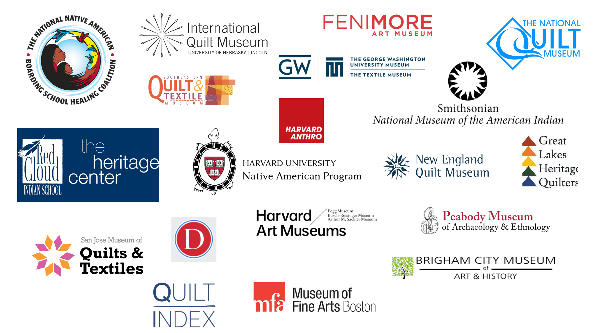

Overview
Brief
이 프로젝트는 미국 원주민 퀄트의 풍부한 예술적 가치를 발견하고 시각화하는 프로젝트입니다. 역사적, 문화적 영향을 조사함으로써 이 퀼팅의 섬세한 아름다움과 상징성을 기념합니다. 데이터 분석과 시각화를 통해 사용자는 퀼팅 미적 요소를 탐구하고 감상과 이해를 증진할 수 있는 인터랙티브 도구를 제공합니다. 문화적 민감성과 정확성을 강조하는 이 프로젝트는 예술 애호가, 교육자, 그리고 미국 원주민 케뮤니티 구성원들에게 교육적 경험을 제공합니다.
Duration
Sept - Oct 2022
Role
Data Analyst, Developer
Skills
- Background Research
- Book Research
- Interviews
- Web Scraping
Tools
- Python
- RunwayML
- RawGraphs
- Figma
Problem
미국 원주민 퀼팅 문화에 대한 제한된 인식과 기록
유럽 정착민들에 의해 도입된 퀼트는 미국 원주민 전통에 통합되며 독특한 예술 형태로 발전했습니다. 그러나 이 예술 형식은 공동체 외부에서는 크게 인정받지 못하고 있습니다. 잘못된 표현과 포괄적인 기록의 부족은 퀼팅 문화의 발전 과정과 그 의미를 더욱 흐리게 만들었습니다.
Research Question
미국 원주민 퀼팅 미학의 진화와 상호 연결성을 어떻게 탐구하고 시각화할 수 있을까요?
이 질문은 미국 원주민 부족 전반에 걸친 퀼팅 미학의 진화를 조사하고 생성기술을 사용한 새로운 형태의 연결을 탐구합니다.
Value System
우리의 과정과 결과는 프로젝트의 도덕적 나침반 역할 한 가치 체계에 의해 이끌어졌습니다
과정 가치 체계
참여적 (Participatory)
해당 분야의 전문가들과 협력하여 프로젝트의 초점과 연구 질문을 구체화했습니다.
정확성 (Accuracy)
전문가와의 연구 검증 및 데이터 불일치를 해결하는 방법을 설계했습니다.
프로젝트 가치 체계
자발적 학습 (Self-initiated Learning)
발견 주도 및 탐구 학습을 촉진했습니다.
민감성 (Sensitive)
최종 결과물이 미국 원주민의 역사, 문화, 전통을 존중하도록 보장했습니다.
투명성 (Transparent)
다른 사람들이 이 프로젝트를 기반으로 발전시킬 수 있도록 데이터 소스와 프로세스를 공개적으로 제공했습니다.
Research
미국 원주민 퀼팅의 역사와 발전에 대한 심층 탐구
배경 연구 (Background Research)
역사적 맥락과 영향을 이해하는 과정.
도서 조사 (Book Research)
하버드 도서관 자료를 활용하여 정보 수집.
인터뷰 (Interviews)
미국 원주민 퀼팅 전문가를 통해 인사이트 확보.
웹 스크래핑 (Web Scraping)
온라인 자료와 데이터베이스에서 데이터 수집.
Insight 1
퀼팅 문화는 역동적이고 진화하고 있습니다
미국 원주민 퀼팅은 문화적 상징성과 스토리텔링을 포함하며, 비원주민 공동체와 기숙학교의 영향을 받아 지속적으로 발전해왔습니다.
Insight 2
시각적 관계는 문화적 연결성을 반영합니다
색상과 문양을 포함한 퀼팅 미학은 다양한 미국 원주민 부족들과 외부 문화의 영향을 어우러진 연결성을 보여줍니다.
Insight 3
생성 기술은 새로운 관점을 제공합니다
StyleGAN과 RunwayML과 같은 도구를 활용하여 대체 퀼팅 미학과 부족 간 가상적 연결을 탐구할 수 있습니다. 이를 통해 문화적 교류에 대한 새로운 통찰을 발견할 수 있습니다.
Stakeholders
다양한 이해관계자의 요구 사항 파악 및 충족
일반 대중
미국 원주민 퀄팅 문화에 대해 배우고자 하는 사람들.
교육자/큐레이터
정확하고 문화적으로 민감한 데이터 표현이 필요한 전문자.
미국 원주민
정직하고 정확한 해석을 요구하는 공동체 구성원.
Data Preparation
분석을 위한 데이터 준비 및 정리
데이터 수집 과정에서는 여러 가지 어려움이 있었습니다. 데이터 출처는 대학교 학과, 문화유산 센터, 선교 기숙학교, 박물관 등이 포함되었습니다. 문제로는 잘 문서화된 퀼트 이미지의 부족과 일관성 없는 속성 등이 있었습니다.
정확한 분석을 위한 데이터 표준화
날짜, 위치, 기간, 크기, 기법, 주요 원단 및 섬유와 같은 속성은 일관성을 유지했습니다. 부족 정보는 대부분 일관성이 있었지만 퀼트 제작자의 이름과 역사에 대한 정보는 일관성이 부족했습니다. 이를 해결하기 위해 14개의 색상 그룹을 생성하고 엣지 감지 및 클러스터링 기술을 활용해 데이터를 표준화했습니다.
데이터 수집 과정 1
데이터 수집 과정 2
색상 추출
Solution
퀄팅 미학을 시각화하는 인터랙티브 도구 개발
이 솔루션은 사용자들이 미국 원주민 퀼트를 시각적으로 탐구할 수 있는 포괄적인 디지털 플랫폼을 구축하는 데 초점을 맞추었습니다. 고급 데이터 시각화 기술을 활용하여 사용자가 다양한 부족간의 퀼팅 미학의 발전 과정을 탐구하고, 문화적 연결을 이해하며, 복잡한 디자인과 상징성을 감상할 수 있도록 했습니다. 이 인터랙티브 도구는 다음과 같은 주요 기능을 포함되어 있습니다:
색상 및 문양 분석 (Color and Motif Analysis)
다양한 부족과 시기에 걸친 색상 사용과 문양을 시각적으로 표현하여 패턴과 트렌드를 탐구할 수 있습니다.
생성 모델 (Generative Models)
AI를 활용하여 가상 퀼팅 미학을 탐구를 통해 잠재적인 미래 디자인을 시뮬레이션합니다.
퀄트의 세부 정보 (Detailed Quilt Information)
각 퀄트에 대한 상세한 역사적 및 문화적 배경 정보를 제공하여 사용자들의 이해와 감상을 향상합니다.
General Model Implementation
생성 모델을 활용한 상호 연결성 탐구
생성 모델은 새로운 인사이트를 제공합니다. StyleGAN과 RunwayML을 사용하여 잠재적인 미래 디자인과 부족 간의 문화적 교류를 탐구함으로써 이들의 상호 연결성을 더 깊이 이해할 수 있었습니다. 이러한 접근 방식은 전통적인 퀼트 미학을 확장하고 새로운 관점을 제시하는 데 기여합니다.
모든 퀼트에 대한 StyleGAN 학습 모델
Hopi 부족과 Sioux 부족의 퀼트에 대한 StyleGAN 학습 모델
Initial Designs
프로젝트 접근 방식 탐색 및 개선
색상 탐구 페이지 (Color Exploration Pages)
부족과 위치별 색상 탐구 초안은 시각적 관계를 이해하고 최종 디자인에 영향을 주는 데 도움을 주었습니다. 하지만 이러한 초안은 복잡성과 간소화된 시각화의 필요성으로 인해 수정되었습니다.
부족별 색상 탐구 초안
위치별 색상 탐구 초안
생성 모델 (Generative Models)
StyleGAN과 RunwayML을 사용하여 다양한 부족의 퀼트를 학습한 모델을 개발했습니다. 이를 통해 Hopi와 Sioux 부족 간의 유사성과 지식 교류를 탐구했습니다. 초기 디자인은 유의미한 통찰을 제공했지만, 더 명확하고 의미 있는 시각화를 위해 개선되었습니다.

색상 범주 및 탐구의 충적 다이어그램
타임라인에 따른 색상 추출
Visualization Exploration
퀼팅 데이터의 시각적 및 인터랙티브 표현 제작
RAWGraphs와 Figma를 활용하여 퀼트의 전반 색상 사용과 상징성을 탐구하는 시각화를 설계했습니다. 이러한 시각화는 프로토타입 제작과 전문가의 피드백을 통해 명확성과 문화적 민감성을 보장하며 지속적으로 개선되었습니다.

실제 데이터 적용된 색상 탐구

부족별 영향 탐구

문양별 영향 탐구

문양별 영향 탐구 - 세부 사항
부족별 색상 그래프
풍경별 색상 그래프
Final Prototype
미국 원주민 퀼팅 미학 탐구를 위한 인터랙티브 도구
최종 프로토타입에는 사용자가 미국 원주민 퀼트의 색상 사용, 문양 및 문화적 영향을 탐색할 수 있는 시각화가 포함되어 있습니다. 이 도구는 풍부한 예술 형식을 배우고 감상하고 이해할 수 있도록 돕습니다. 문화적 민감성과 정확성을 보장하여 미국 원주민 퀼트의 가치를 존중하는 접근 방식을 제공합니다.

색상별 퀼트 탐구 페이지

별 모양 퀼트 탐구 페이지
퀄트 생성 모델 페이지
퀄트 생성 모델 결과 페이지
Impact
문화 인식 및 감상 증진
이 프로젝트는 미국 원주민 퀼팅 문화에 대한 이해와 감상을 높이는 데 기여합니다. 인터랙티브하고 교육적인 도구를 제공함으로써 문화적 인식을 높이고, 역사적 및 현대적 영향을 강조하며, 원주민 예술 전통에 대한 존중과 관심을 장려합니다.
Limitations
개선 사항
이 프로젝트는 잘 기록된 퀼트 이미지와 다양한 패턴의 부족과 같은 한계에 직면했습니다. 향후 개선 사항으로는 데이터 확장, 시각화 개선, 다양한 부족의 더 넓은 표현 보장 등이 있습니다. 이러한 노력을 통해 프로젝트의 깊이와 가치를 더욱 강화할 수 있을 것입니다.
Reflection
미국 원주민 퀼팅 미학 탐구에서 얻은 교훈
이 프로젝트는 문화적 민감성과 정확한 표현의 중요성을 강조했습니다. 전문가들과의 소통 및 피드백 반영은 의미 있는 도구를 개발하는 데 매우 핵심적이였습니다. 반복적인 디자인의 가치와 기술이 문화 유산에 대한 새로운 관점을 제시할 가능성을 확인할 수 있는 경험이었습니다.